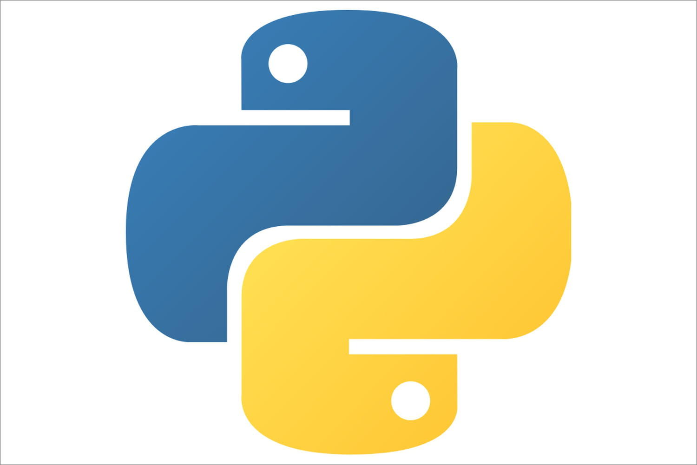
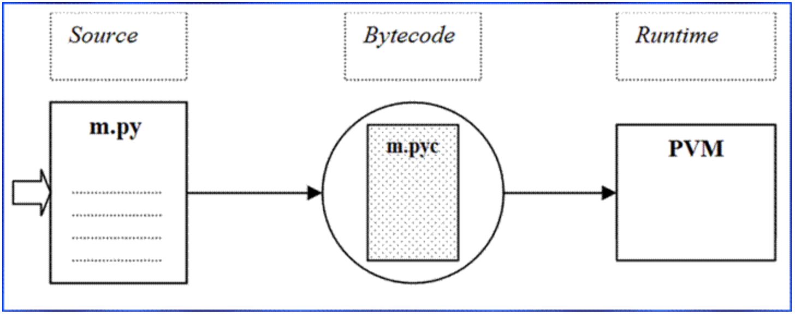
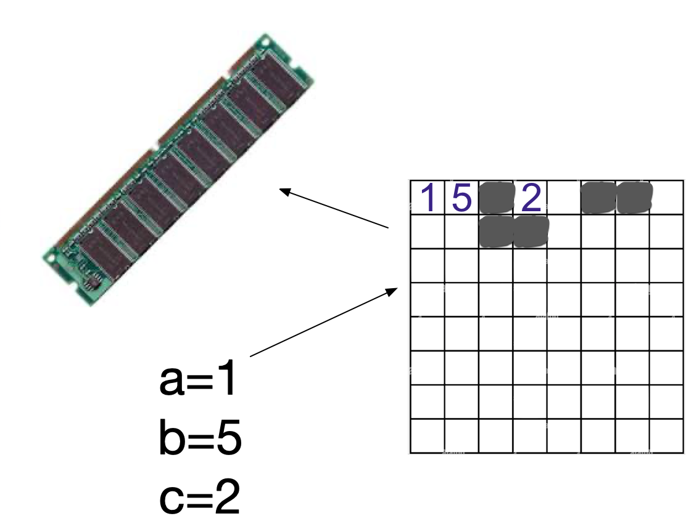
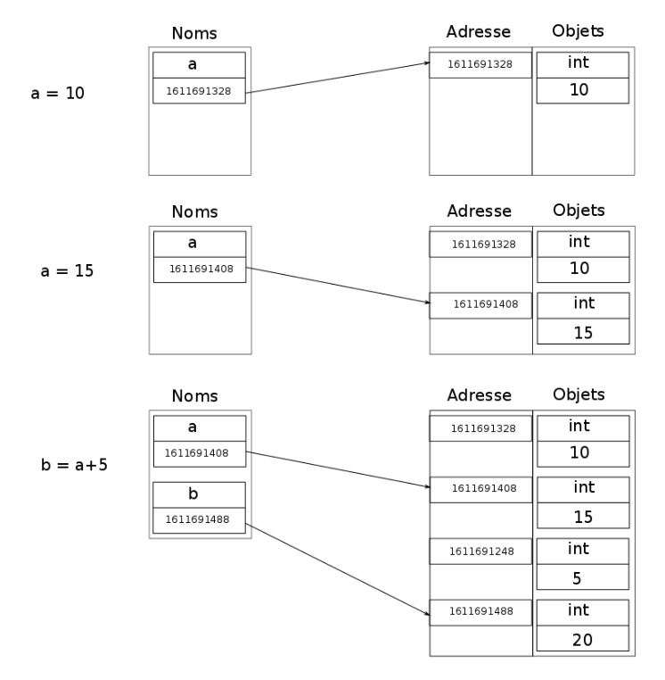
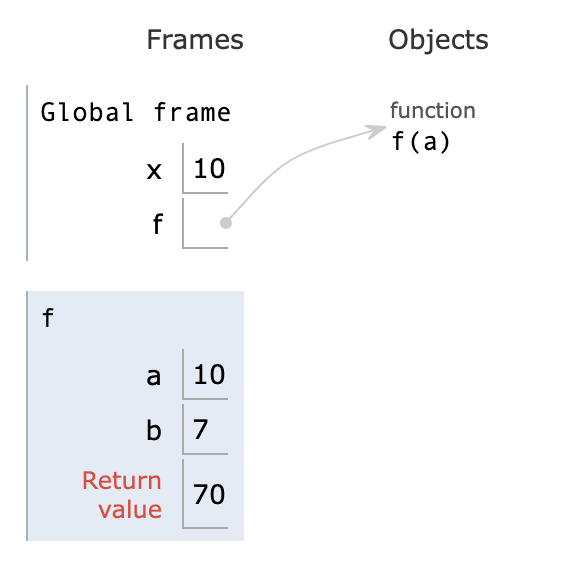

python
Naissance de Python
Python, créé en 1991, est désormais le principal langage de programmation dans les domaines du Machine Learning, du Big Data et de la Data Science.
Son créateur est un néerlandais nommé Guido van Rossum, qui a cherché à faire un langage très simple et lisible. Certains prétendent même que lire du code Python équivaut à lire de l’anglais.
Bio de Guido Van Rossum - wikipedia
Le site « Rosetta Code » permet de comparer des programmes réalisant le même travail dans plusieurs centaines de langages informatique différents, confirme cette lisibilité.
la licence Python appartient depuis 2001 à la Python Software Foundation, organisation sans but lucratif. La licence est donc FLOSS “Free/Libre and Open Source Software”, à l’instar de Linux, Ubuntu, LibreOffice, Mozilla Firefox, Mono (clone de la plateforme .NET de Microsoft), Apache Web Server et le VLC player.

Langage de haut-niveau
On appelle « haut niveau » les langages de forte abstraction, qui s’éloignent de l’électronique de l’appareil opérant le programme. Un langage orienté autour du problème à résoudre sans s’occuper des caractéristiques techniques du matériel utilisé.
Python est généralement appelé un langage interprété, cependant, il combine la compilation et l’interprétation:
- Lorsque nous exécutons un code source (un fichier avec une extension
.py), Python le compile d’abord en un bytecode. - Le bytecode est une représentation de bas niveau indépendante de la plate-forme de votre code source, cependant, il ne s’agit pas du code machine binaire et ne peut pas être exécuté directement par la machine.
- Le bytecode est un ensemble d’instructions pour une machine virtuelle qui s’appelle la machine virtuelle Python (PVM).

du .py au PVM
Objets de type primitif et type construit
Il faut distinguer en programmation les variables et les valeurs (ou objet). Une variable est un nom donné à une valeur. Cette valeur a un type. En python, celui-ci est imposé lors de l’affectation d’une valeur (objet) à la variable créée. (typage dynamique)
Un objet désigne une entité stockée en mémoire.
Un objet est toujours d’un certain type.
- Les types int, float, bool, list, str sont les types d’objet primitifs. Par exemple, un nombre entier est représenté par un objet de la classe int.
- Mais il existe aussi des types construits (tuple, list, dict, function…).
Lorsqu’on créé un nom (c.a.d. une variable), on ajoute dans la table de noms de l’espace de nom courant ce nom associé à la référence de l’objet auquel ce nom permet d’accéder.
On peut consulter l’adresse mémoire associé à la valeur grâce à la fonction id
Variables et espace de nom
Une variable est un nom donné à une valeur, stockée en mémoire. En python, une variable est créée lorsque l’on réalise une affectation. Le nom pointe alors vers une adresse mémoire, dans la RAM:

La mémoire: une énorme grille de valeurs et objets
Cette représentation est toutefois incomplète: Au niveau machine, les informations associées au nom de la variable contiennent aussi le type. Au niveau logiciel (interpreteur python), les noms de variables sont stockés dans un espace virtuel du programme python: la table des noms.
La figure suivante montre l’évolution de la table des noms et des objets lors des trois affectations. L’adresse est l’emplacement en mémoire de l’objet.

valeur, adresse et affectation
Lorsque l’on fait appel à une variable, le programme consulte l’espace de noms et trouve la valeur en mémoire, puis retourne cette valeur.
mutable et non mutable
Les types en Python se décompose en deux groupes:
- les types représentant des éléments non-mutable
- les types représentant des éléments mutable
Si une variable est mutable alors on peut modifier son contenu sans créer une nouvelle valeur. Ce sont les types primitifs en python, auquels on ajoute les tuple et le type de rien, None. Chaque fois que l’on modifie une variable par une nouvelle affectation, cela modifie son id… et créé une nouvelle variable avec le même nom.
Pour les objets non mutables, c’est différents. Ce sont les types construits, comme les list, dict, fonctions, classes, objets (issus de classes)…
Fonctions
Definitions
Une fonction permet d’encapsuler un bloc d’instructions et de lui donnéer un nom:
Représentation en mémoire
- Lorsqu’on fait appel à une fonction, les instructions de cette fonction opèrent dans un espace de noms propre à la fonction, c’est-à-dire que les noms créés dans la fonction sont créés dans une table particulière appelée espace de noms de la fonction. Ces noms internes à la fonction sont appelées variables locales. Cette table est détruite lorsque la fonction a terminé son exécution.
Ainsi, les noms créés à l’intérieur d’une fonction ont une portée limitée à cette fonction. En revanche, l’espace des noms (c.a.d. la table des noms) utilisée par le code qui appelle la fonction est bien accessible à l’intérieur de la fonction et on parle alors de variables globales.
Exemple:

valeur, adresse et affectation
Exercice: Résumer les opérations réalisées sur la mémoire lors de l’appel de la fonction
f(x)
Bytecode
On peut verifier comment sont codés les nombres dans la machine en lisant le Bytecode. Le module struct permet la conversion entre valeurs typées de python, et données binaires du C, le bytecode. C’est ce bytecode qui est passé à la machine après compilation lors de l’execution.
Reconstruction d’un nombre à partir de son complément à 2
On doit alors spécifier le format de ces valeurs, avant d’en demander la conversion en bytecode.
Pour faire cela, on importe la librairie struct avec import struct.
La fonction int_to_b permet de convertir un entier signé en Bytecode, puis de retourner la sequence binaire correspondante.
Testons cette fonction avec le nombre -129:
Rappelez vous: pour coder un entier signé, il faut:
- inverser tous les bits (chercher le complément à 1)
- ajouter 1 au nombre binaire pris en valeur absolue
Donc pour retrouver la valeur absolue en binaire, il faudra :
- soustraire 1
- déterminer le complement à 1 (inverser tous les bits)
‘0b11111111111111111111111101111111’ -> (-1) ‘0b11111111111111111111111101111110’
puis inversion de tous les bits:
N = ‘0b11111111111111111111111101111110’
inverse_bits(N) = ?
Il pourra être utile de programmer une fonction inverse_bits pour eviter de faire les 32 bits “à la main”.
Le debut de cette fonction pourrait être:
Puis pour finir:
à vous de jouer
Utiliser les fonctions float_to_bin puis int_to_bin pour obtenir les représentations de -126 dans les 2 représentations vues ici: selon la norme IEEE 754 puis selon le codage à complement à 2.
Verifier alors que le nombre peut être reconstruit selon ces 2 normes, et que l’on retrouve bien -126.
CONVERSION PYTHON -> C
S’il s’agit d’un flottant à convertir en bytecode, faire:
struct.pack('!f', num)
On précise ici que la variable num est de type float. num sera alors codé en C-bytes selon la norme IEEE 754.
Exemple: en console, on demande le bytecode qui code le flottant 500.0
Les options sont:
- i : entier non signé
- I : entier signé
- f : float
CONVERSION C -> PYTHON
L’opération inverse s’effectue ainsi :
bits,=struct.unpack('!I', b'C\x01\x00\x00')
La virgule après bits doit bien être écrite afin de que bits soit mis en format numerique. Cela permet de traduire le Bytecode b'C\x01\x00\x00' en une serie de bits.
Si on veut afficher la série de bits:
Programme complet: python -> C -> python
La fonction float_to_b permet de convertir un flottant en Bytecode, puis de retourner la sequence binaire correspondante. Celle-ci suit la norme IEEE 754, en simple precision.
On peut alors tester avec le nombre -129:
Reconstruction d’un nombre à partir de la représentation en ieee 754
On peut alors vérifier si la reconstruction du nombre -129 est possible à partir de ce binaire: Le nombre s’écrit:
$$-1^{bit~signe}\times 1,M \times 2^{E-127}$$Le binaire est constitué de 3 parties
| bit de signe | E | M |
|---|---|---|
| 1 bit | 8 bits | 23 bits restants |
| 1 | 10000110 | 00000010000000000000000 |
E vaut donc 10000110. Or, pour obtenir la puissance de 2, il faut soustraire 127. Ceci permet de gérer les puissances négatives de 2 et donne une etendue [-127; 128] à l’exposant.
Cela peut se faire selon le calcul suivant:
M est la partie après la virgule de 1,M. On rajoute le bit entier avant la virgule: (on n’écrit pas les zeros à droite du dernier 1)
$$1,0000001$$Le nombre s’écrit :
$$-1 \times 1,0000001 \times 2^7$$Mais l’exposant 7 doit permettre alors de decaler la virgule de 7 rangs vers la droite, ce qui donne finalement:
$$-1 \times 10000001$$Cette fois, on peut evaluer ce binaire, et il vaut:
$$-127$$Liens
https://www.ausy.fr/fr/actualites-techniques/que-se-cache-t-il-derriere-python
https://ichi.pro/fr/comprendre-le-bytecode-python-255007960625997
https://opensource.com/article/18/4/introduction-python-bytecode